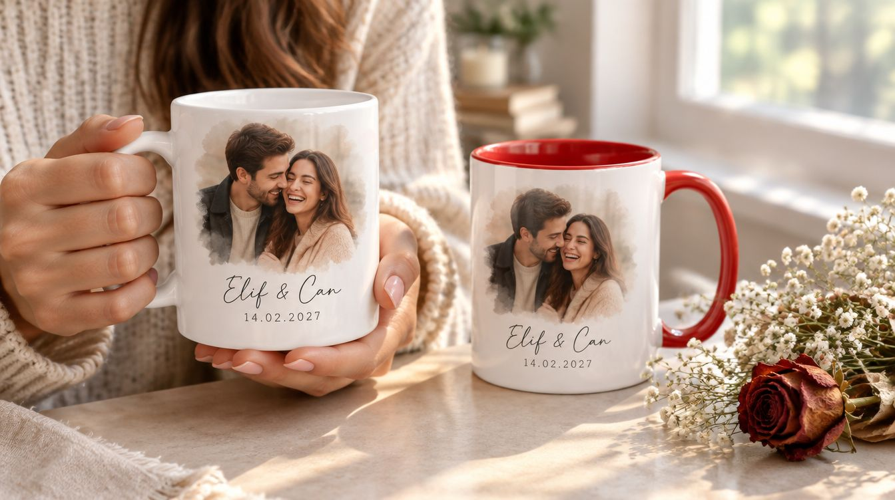

Fotoğraf, isim, tarih ya da logo; beyaz seramik kupa ve renkli iç-kulp seçenekleri. Sevgiliye tek kupa, ofise elli kupa: tasarım bizden, baskı ve kutu dâhil.

Kupa, hediyelerin en çok kullanılanı: rafta durmuyor, her gün masada. Bu yüzden üstündeki tasarım ilk bakışta değil, yüzüncü bakışta da iyi durmalı. Fotoğrafı kupanın kavisine göre yerleştiriyor, yazıyı kulp çevresine sıkışmayacak şekilde kuruyor, koyu iç renkte dış tasarımın nasıl duracağını basmadan gösteriyoruz.
Beyaz seramik kupa standart; iç ve kulp rengi (kırmızı, siyah, lacivert, yeşil, sarı ve diğerleri) tasarıma göre seçiliyor. Kupa gövdesi tam çevre basılıyor, kulp bölgesi hariç.
Kurumsal kupa üç yerde çalışıyor: ofis içinde (personel kupası, toplantı odası takımı), müşteriye giden hediyede (yeni yıl, bayram, sözleşme yıl dönümü) ve hoş geldin setinde (yeni personel, staj, bayi). Logo tek başına sıkıcı kalıyor; logoyla birlikte kurumsal renkte iç-kulp ve kısa bir cümle daha çok tutuluyor.
Adet arttıkça teslim süresi uzuyor, kalite değişmiyor; kutulu ve tek tek paketli teslim ediyoruz. Tekrar siparişte aynı ürün ve aynı tasarım dosyası kullanılıyor.
Kişiye özel kupa en çok çiftler için isteniyor: bir fotoğraf, iki isim, bir tarih; eşli iki kupa, biri kırmızı kulp biri siyah. Onun ardından anneler ve babalar günü için çocukluk fotoğrafı, öğretmene sınıf fotoğrafı, doğum günü için arkadaş grubunun karesi, evcil hayvanın portresi geliyor.
Fotoğrafı temizleyip kupaya göre kesiyoruz; suluboya kenar, el yazısı isim ve tarih gibi düzenlemeleri tasarımda biz yapıyoruz. Tek kupa sipariş alıyoruz; kutu ve not kartı ekleniyor.
Ürün: beyaz seramik kupa; iç ve kulp rengi seçenekleri; standart ve büyük boy. Renkli iç kupalarda dış tasarım beyaz zemine basılıyor.
Baskı alanı: gövde tam çevre, kulp bölgesi hariç; tek fotoğraf, iki yüzlü farklı tasarım ya da çevreyi dolanan yazı.
Fotoğraf: net ve yeterli çözünürlükte olmalı; zayıf fotoğrafı önce büyütüp temizliyoruz, yetmezse çizim seçeneğini öneriyoruz.
Bakım: elde yıkama en uzun ömürlü; bulaşık makinesinde zamanla solma olabiliyor, bunu ürünle birlikte not olarak veriyoruz.
Beyaz mı renkli kulp mu, kaç adet, tek tasarım mı isimli sürümler mi.
Fotoğraf ve yazı kupanın kavisine göre yerleştiriliyor; kupa üstünde ekranda gösteriliyor.
Onaydan sonra basılıyor; renkli iç kupada ilk parça ayrıca kontrol ediliyor.
Tek tek kutulu; hediye siparişinde kurdele ve not kartı.
Gövdenin tamamına, kulp bölgesi hariç. Fotoğraf genellikle bir yüze, isim ve tarih diğer yüze ya da altına yerleşiyor; çevreyi dolanan yazı da mümkün.
Elde yıkamada uzun yıllar gidiyor; bulaşık makinesinde yüksek sıcaklık ve deterjan zamanla soldurabiliyor. Bunu gizlemiyoruz, bakım notunu kupayla veriyoruz.
Kırmızı, siyah, lacivert, yeşil, sarı, turuncu, pembe ve stoğa göre diğerleri. Tasarımın ana rengine göre kulp rengini biz öneriyoruz; ekranda gösteriyoruz.
Basılır. Çift takımlarında her kupa ayrı tasarımlı olabiliyor; ofis siparişinde de her personelin adı ayrı ayrı basılıyor.
Var. Kutu, kurdele ve isteğe bağlı el yazısı not kartı; kargoyla gönderimde kupa ayrıca korumaya alınıyor.
İletişim
Fotoğrafı ve isimleri gönderin; tasarımı kupa üstünde aynı gün gösterelim.